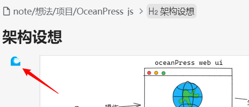
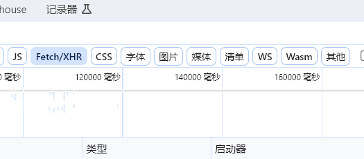

首页
OceanPress插件
为挂件生成快照
1.
安装
OceanPress插件
2.
挂件的左上角会出现一个🌊标识，如果是灰色的则代表没有生成过该挂件的快照，点击🌊即可更新快照（不会自动生成，需要手动点击更新）

例如下方就是使用的挂件 excalidraw 绘制的图，然后使用OceanPress插件保存的快照，
架构设想

OCR
OceanPress插件实现完美ocr v0.3.6
更新日志
支持在思源内打开OceanPress面板 0.3.28
支持使用umi-ocr进行图片识别 v0.3.10
OceanPress插件支持tif文件渲染 v0.3.8
OceanPress插件支持手机端ocr文本识别 v0.3.7
OceanPress插件实现完美ocr v0.3.6